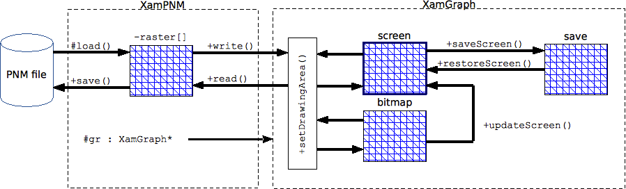

|
Synopsys – Interface publique – Mise en oeuvre – Spécialisation |
XamPNM est une classe de base dédiée à la manipulation d'images de type PNM. Elle reconnaît tous les types P1, P2, P3, P4, P5 et P6, soit tous les formats PBM, PGM ou PPM, binaires (raw) et ASCII (plain) ; avec une profondeur maximale de 8 bits par teinte (256 niveaux de gris ou codage RVB sur 24 bits).
Principe de fonctionnement
XamPNM assure le chargement d'un fichier PNM et le stockage des points de l'image dans un plan privé nommé 'raster'. La projection de ce plan sur l'écran est déléguée à un objet de classe XamGraph (agrégation).
La classe XamGraph est capable de gérer trois plans graphiques de tailles identiques : le plan 'screen' visible sur l'écran, un plan 'bitmap' en mémoire, et un plan 'save' permettant de conserver puis de restituer une copie du plan 'screen'. En règle générale, les traitements effectués sur une image sont réalisés sur le plan 'bitmap', puis ce plan est copié sur 'screen' (ce qui permet un affichage beaucoup plus rapide que lors d'un travail direct en mémoire vidéo sur le plan 'screen'...).
Le synoptique ci-dessous montre les transferts possibles des points d'une image :

Un objet XamPNM est associable à une instance active de XamGraph jouant alors le rôle de visualiseur de l'image. Dans la présente documentation, le 'display' représente aussi bien le plan 'screen' que le plan 'bitmap', suivant la sélection en cours au niveau du visualiseur XamGraph.
XamPNM et ses classes dérivées peuvent accéder à toutes les ressources publiques proposées par XamGraph au moyen de l'agrégation protégée gr.
#include <xampnm.h>
catégories |
liste alphabétique des méthodes publiques et protégées |
|
XamPNM::XamPNM(const char* filename ) ; [constructeur]
Ce constructeur assure le chargement du fichier PNM spécifié en argument. En cas d'échec de lecture ou d'incompatibilité de format, des messages sont injectés sur la sortie d'erreur standard.
XamPNM::XamPNM(int width, int height, bool isRgb = true ) ; [constructeur]
Constructeur de la classe permettant de préparer une image de dimensions width x height de format binaire type PGM ou PPM (PPM par défaut, suivant l'argument isRgb). Tous les points sont fixés de couleur noire. Le nom interne de l'image est arbitrairement fixé à 'noname' jusqu'à la première sauvegarde.
En cas d'échec de réservation mémoire, des messages sont injectés sur la sortie d'erreur standard.
XamPNM::~XamPNM() ; [destructeur]
Destructeur de la classe.
string XamPNM::version() ; [static]
Méthode statique fournissant la version courante de XamPNM.
bool XamPNM::openFailed() const ;
Compte-rendu de chargement d'une image lors de la construction d'instance ou suite à un appel à la méthode protégée load().
int XamPNM::save(const char* filename, bool isRgb = true ) ;
Sauvegarde de l'image courante 'raster' dans le fichier spécifié, retourne -1 en cas d'erreur ou 0 en cas de succès. Le chemin indiqué ne doit pas comporter d'extension, celle-ci est déterminée par les caractéristiques de l'image présente dans le 'raster'. La sauvegarde est toujours effectuée en format binaire (types P5 ou P6).
int XamPNM::load(const char* filename ) ; [protected]
Méthode protégée de chargement dans le 'raster' d'un fichier PNM spécifié en argument. En cas d'échec de lecture ou d'incompatibilité de format, des messages sont injectés sur la sortie d'erreur standard.
string XamPNM::fileName() const ;
Retourne le nom de fichier de l'image courante.
int XamPNM::magicNumber() const ;
Retourne le type de fichier PNM sous forme d'un entier compris entre 1 et 6 (types PNM P1, P2, P3, P4, P5 ou P6).
Retourne true si l'image courante est de type P4, P5 ou P6, false sinon.
Retourne true si l'image courante est de type PPM P3 ou P6, false sinon.
Les méthodes suivantes fournissent les dimensions et la profondeur de l'image présente dans le 'raster'. Pour adapter les dimensions de l'image avec celle du 'display', utiliser la méthode surfaceSize().
Profondeur de l'image sous forme de la valeur maximale de codage d'une composante couleur d'un pixel ; vaut en général 255, ce qui correspond à une profondeur de 8 bits pour une image en niveaux de gris (PGM) et une profondeur de 24 bits pour une image en couleurs (PPM).
Largeur de l'image en pixels
Hauteur de l'image en pixels.
Association avec XamGraph
void XamPNM::setDisplay(XamGraph* gr ) ;
Méthode d'agrégation entre l'image PNM et un display compatible matérialisé par l'instance active d'un projet XamGraph ; cette association est indispensable avant l'utilisation des méthodes de transfert write() et read().
Note : Le lien protégé gr permet aux classes filles de XamPNM d'accéder directement aux ressources de laclasse XamGraph.
bool XamPNM::surfaceSize(int& w, int& h, const XamPNM* mask = 0 ) ; [protected]
Méthode protégée de comparaison des tailles du plan image 'raster' avec celui d'une autre image spécifiée par mask. Si cet argument est nul, la omparaison est faite avec le display (plan 'screen' de XamGraph). La méthode affecte w et h respectivement avec la plus petite largeur et la plus petite hauteur trouvées.
La méthode retourne true, sauf lorsque mask est nul et que l'association avec XamGraph n'a pas été réalisée ; dans ce cas, w et h ne sont pas modifiés.
void XamPNM::write(int zoom = 1 ) ;
Projection de la matrice 'raster' sur le 'display', limitée aux dimensions du 'display'. Cette méthode est sans effet si l'agrégation avec un objet XamGraph n'a pas été réalisée par setDisplay().
L'argument zoom peut être utilisé pour grossir chaque pixel à l'affichage, sous réserve que le 'display' associé soit dimensionné en conséquence.
void XamPNM::read(int zoom = 1 ) ;
Remplissage de la matrice 'raster' à partir des pixels du 'display', limité aux dimensions du 'raster'. Cette méthode est sans effet si l'agrégation avec un objet XamGraph n'a pas été réalisée par setDisplay().
L'argument zoom peut être utilisé pour réduire chaque pixel lorsque l'image projetée est zoomée.
Manipulation des pixels du raster
Les méthodes de cette rubrique concernent les points de l'image chargée dans le 'raster' ; elles sont indépendantes du visualiseur XamGraph et peuvent donc être utilisées avant l'association avec celui-ci.
Uint32 XamPNM::pixel(int x, int y ) const ;
Retourne la couleur du pixel spécifié au format 0xRRGGBBAA avec la canal Alpha toujours égal à 0xFF ; ce codage est compatible avec les ressources fournies par XamGraph.
void XamPNM::setPixel(int x, int y, Uint8 r, Uint8 g, Uint8 b ) ;
void XamPNM::setPixel(int x, int y, Uint32 color ) ;
Modificateur de couleur du pixel dont les coordonnées sont spécifiés en arguments. La couleur est indiquée par ses composantes R, G et B ou par une valeur 32 bits au format 0xRRGGBBAA (dans ce cas, le canal alpha AA est ignoré) ; ce codage est compatible avec les ressources fournies par XamGraph.
Uint8 XamPNM::red(int x, int y ) const ;
Uint8 XamPNM::green(int x, int y ) const ;
Uint8 XamPNM::blue(int x, int y ) const ;
Sélecteurs des composantes de couleurs du pixel dont les coordonnées sont spécifiés en arguments. Dans le cas d'une image en niveau de gris, les 3 méthodes retourne la même valeur de luminance.
void XamPNM::setRed(int x, int y, Uint8 r ) ;
void XamPNM::setGreen(int x, int y, Uint8 g ) ;
void XamPNM::setBlue(int x, int y, Uint8 b ) ;
Modificateurs des composantes de couleurs du pixel dont les coordonnées sont spécifiés en arguments.
Uint8 XamPNM::gray(int x, int y ) const ;
Retourne la luminance (moyenne des composantes RGB) du pixel dont les coordonnées sont spécifiés en arguments..
void XamPNM::setGray(int x, int y, Uint8 v ) ;
Fixe le pixel de coordonnées x, y avec le niveau de gris v.
Uint8 XamPNM::normalize(int v ) ;
Retourne la valeur normalisée entre 0 et maxVal() de la composante de teinte spécifiée en argument.
XamPNM maintient en permanence des tables de distribution des pixels de l'image contenue dans le 'raster'. Une table de distribution contient, pour chaque valeur possible de composante (valeur comprise entre 0 et maxVal()), le nombre de pixels de l'image proposant cette valeur.
Ces informations permettent d'obtenir le spectre lumineux de l'image.
int XamPNM::spectrumMaxValue() ;
Retourne l'ordonnée maximale des tables de distribution.
int XamPNM::rSpectrum(int index ) ;
int XamPNM::gSpectrum(int index ) ;
int XamPNM::bSpectrum(int index ) ;
Méthodes d'obtention des distributions des composantes R, G ou B pour la valeur de composante index.
int XamPNM::spectrum(int index ) ;
Méthode retournant la moyenne des distributions RGB pour la valeur de composante index.
Créer un répertoire de travail pour l’application C++ à développer, importer dans ce répertoire une copie du fichier Makefile fourni par la distribution XamGraph.
Ce fichier de commandes make contient déjà toutes les instructions requises pour la prise en compte de la classe XamPNM ; il suffit pour cela de décommenter la dernière ligne de la rubrique PARAMETRAGE ( WITH_XAMPNM = 1 ).
Programme minimal
Le main.cpp ci-dessous montre comment visualiser une image PNM dont le chemin d'accès est transmis sur la ligne de commandes :
#include <iostream>
using namespace std ;
#include <xamgraph.h>
#include <xampnm.h>
#define ESC 0x1b
XamGraph* graph = NULL ;
void keyUpHandler(int key, int modifier ) { if ( key == ESC ) graph->quit() ; }
int main(int argc, char** argv )
{
cout << "XamPNM version " << XamPNM::version() << endl ;
// chargement de l'image PNM
XamPNM* image = new XamPNM( argv[1] ) ;
if ( image->openFailed() ) return -1 ;
// affichage des caractéristiques de l'image
cout << "PNM type : P" << image->magicNumber() ;
cout << " (" << ( image->isRaw() ? "raw" : "plain" ) << ")" << endl ;
cout << "size : " << image->width() << " x " << image->height() << endl ;
// création et association du 'display'
graph = new XamGraph( image->width(), image->height(), "XamPNM min test" ) ;
if ( graph == NULL ) return -2 ;
image->setDisplay( graph ) ;
// projection indirecte de l'image sur le 'display'
graph->setDrawingArea( XAM_DRAWING_BITMAP ) ;
image->write() ;
graph->updateScreen() ;
// boucle d'événements (fin par touche Esc)
graph->connectKeyDownEvent( keyUpHandler ) ;
graph->run() ;
return 0 ;
}
La classe XamPNM offre une base de développement de manipulations d'images. La mise en place de méthodes de traitement d'images peut être réalisée par simple dérivation de la classe...
En guise d'exemple, les extraits de code qui suivent montrent une classe nommée CImgProcessing dérivée de XamPNM, avec quelques embryons de méthodes de traitement :
// cimgprocessing.h
// -------------------------------------------------------------
#ifndef CIMGPROCESSING_H
#define CIMGPROCESSING_H
#include <xampnm.h>
class CImgProcessing : public XamPNM
{
public:
CImgProcessing( const char* fname ) : XamPNM( fname ) {}
CImgProcessing( int w, int h, bool rgb = true ) : XamPNM( w, h, rgb ) {}
void method1() ;
void method2( const XamPNM& mask ) ;
void method3() ;
} ;
#endif
// cimgprocessing.cpp
// -------------------------------------------------------------
#include "cimgprocessing.h"
// filtrage spectral : opérateur NON (inversion colorimétrique)
// exemple de traitement de l'image courante par modification directe du 'raster'
// le résultat est projeté sur le 'display'
void CImgProcessing::method1()
{
for ( int j = 0 ; j < height() ; j++ ) {
for ( int i = 0 ; i < width() ; i++ ) {
setRed( i, j, ~red(i,j) ) ;
setGreen( i, j, ~green(i,j) ) ;
setBlue( i, j, ~blue(i,j) ) ;
}
}
write() ;
}
// opérateur de base OU
// exemple de traitement direct de l'image courante
// avec exploitation d'une autre image jouant le rôle de masque
// le résultat est projeté sur le 'display'
void CimgProcessing::method2( const XamPNM& mask )
{
int w = width() ;
int h = height() ;
surfaceSize(w, h, mask ) ;
for ( int j = 0 ; j < w ; j++ ) {
for ( int i = 0 ; i < h ; i++ ) {
setRed( i, j, red(i,j) | mask.red(i,j) ) ;
setGreen( i, j, green(i,j) | mask.green(i,j) ) ;
setBlue( i, j, blue(i,j) | mask.blue(i,j) ) ;
}
}
write() ;
}
// transformation géométrique : reflet horizontal
// exemple de transformation indirect de l'image courante
// lorsque celle-ci ne doit pas varier au cours du traitement
// les points calculés sont envoyés sur le 'display' qui sert de tampon
// le 'display' est recopié dans le 'raster' en fin de traitement
void CImgProcessing::method3()
{
if ( gr == NULL ) return ;
int w = width() ;
int h = height() ;
surfaceSize(w, h ) ;
for ( int j = 0 ; j < w ; j++ ) {
for ( int i = 0 ; i < h ; i++ ) {
Uint8 r = red(i, j ) ;
Uint8 g = green(i, j ) ;
Uint8 b = blue(i, j ) ;
gr->putPixel( w - 1 - i, j, gr->rgb( r, g, b ) ) ;
}
}
read() ;
}XamPNM documentation HTML – mise à jour : 22/03/2024